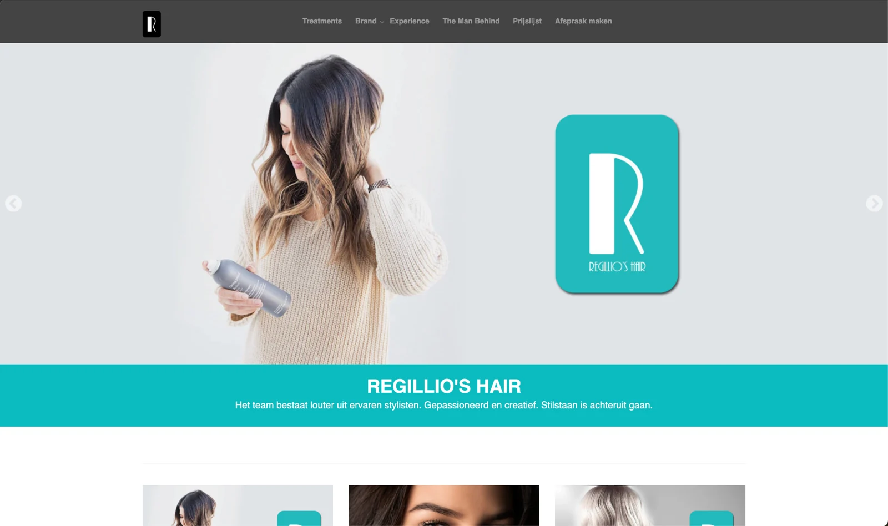
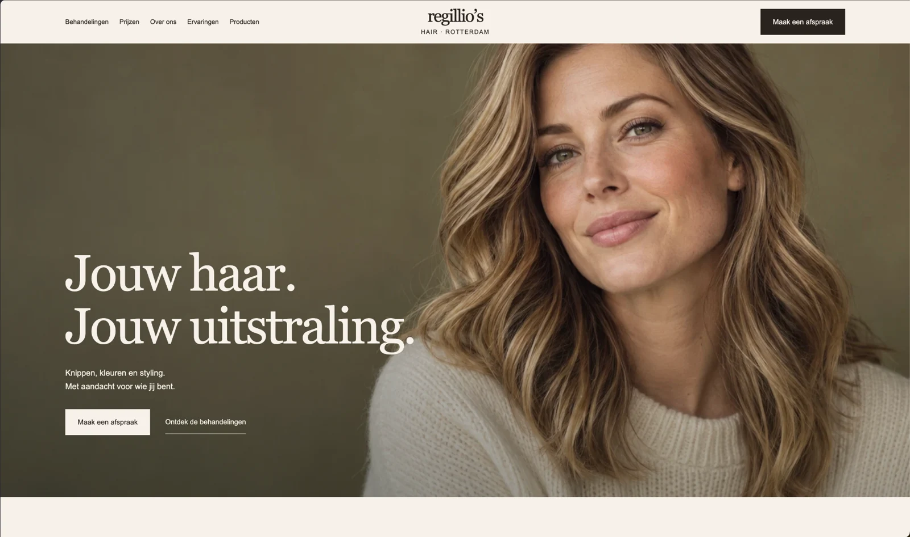

HAIR SALON / ROTTERDAM
Regillio’s Hair
A fresh cut.
A fresh identity.
The salon had moved forward. Its website still belonged to an earlier chapter. I redesigned the site and logo to give the work a more current, open presentation.
- New logo and visual identity
- More open layout and photography
- Clearer treatment and booking navigation
WEBSITE + LOGO REDESIGN
Regillio’s HairRedesigned


The redesign: a new wordmark, generous photography and a clearer route to an appointment.